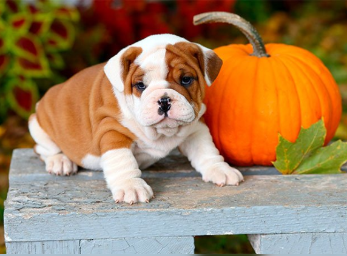
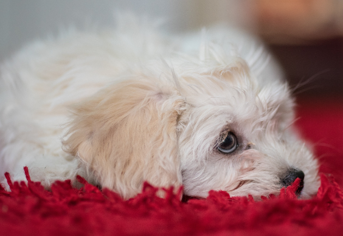
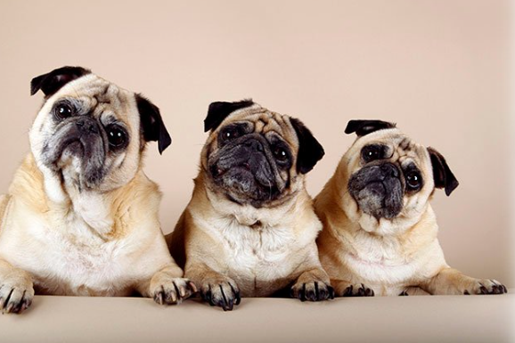
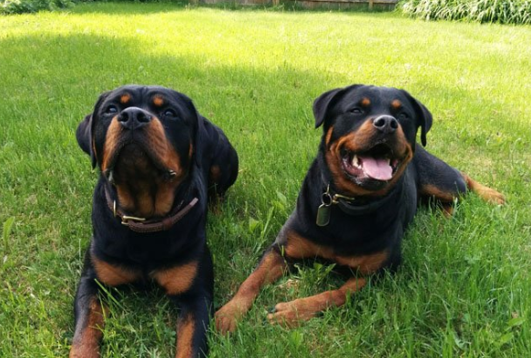
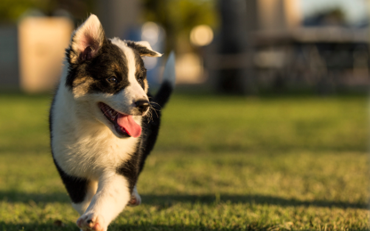
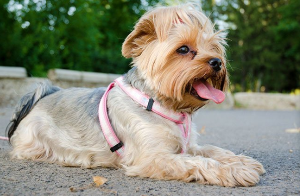

Bulldogs
The Bulldog was originally used to drive cattle to market and to compete in a bloody sport called bullbaiting. Today, they’re gentle companions who love kids. Even though these are purebred dogs, you may find them in the care of shelters or rescue groups. Remember to adopt! Don’t shop if you want to bring a dog home.
Kyi-Leo
The Kyi-Leo is a mixed breed dog — a cross between the Maltese and Lhasa Apso dog breeds. Playful, lively, and sweet, these pups inherited some of the best qualities from both of their parents.
Pugs
The Pug is often described as a lot of dog in a small space. These sturdy, compact dogs are a part of the American Kennel Club’s Toy group, and are known as the clowns of the canine world because they have a great sense of humor and like to show off.
Rottweiler
The Rottweiler was originally dogs bred to drive cattle to market. Later they were used to pull carts for butchers. They were among the earliest police dogs and serve with honor in the military.
Texas Heeler
The Texas Heeler is a mixed breed dog–a cross between the Australian Cattle Dog and Australian Shepherd dog breeds. Intelligent, hard-working, and energetic, these herding pups inherited some of the best qualities from both of their parents.
Yorkshire Terrier
Small in size but big in personality, the Yorkshire Terrier makes a feisty but loving companion. The most popular toy dog breed in the United States, the “Yorkie” has won many fans with their devotion to their owners, their elegant looks, and their suitability to apartment living.
